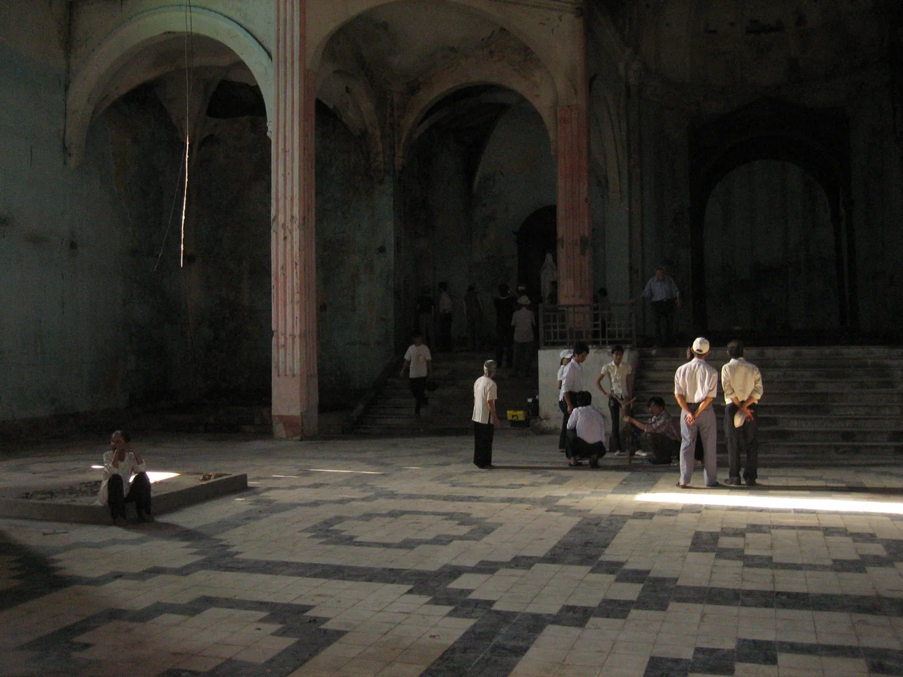
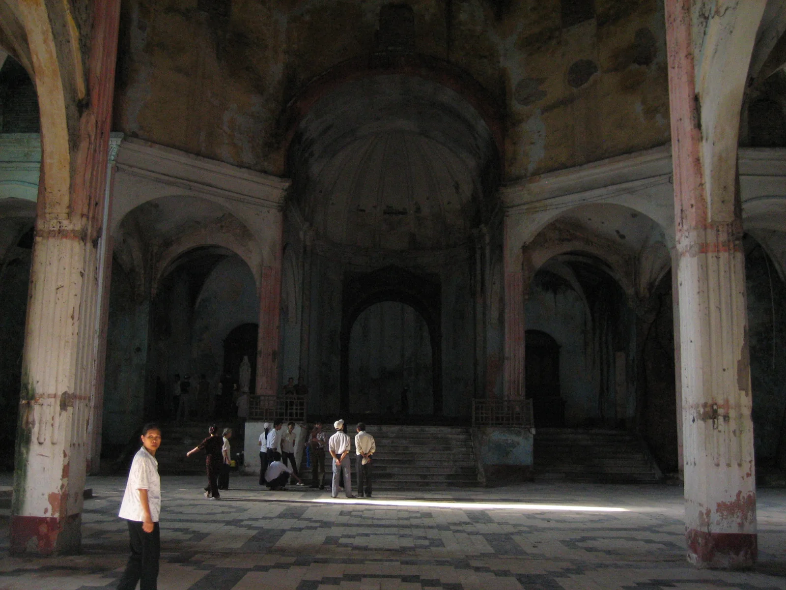
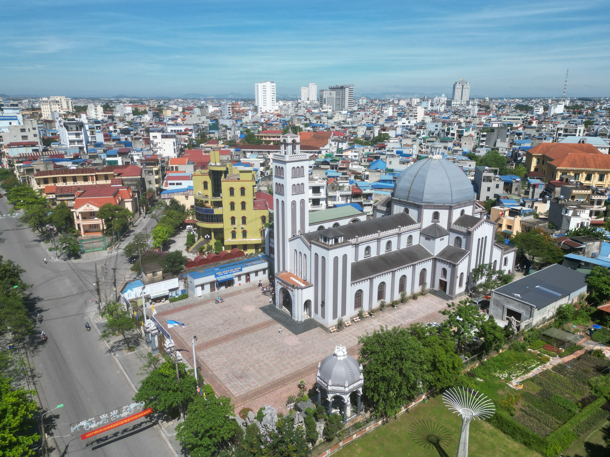
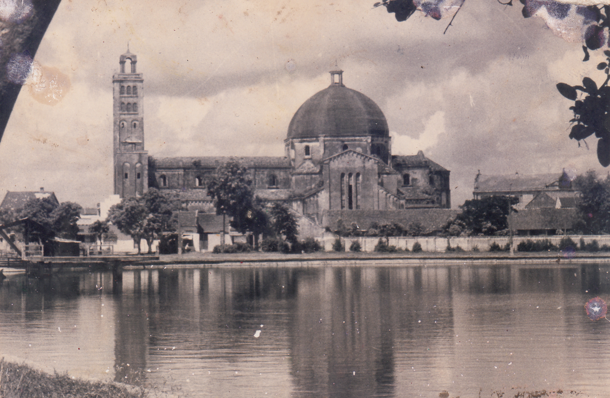
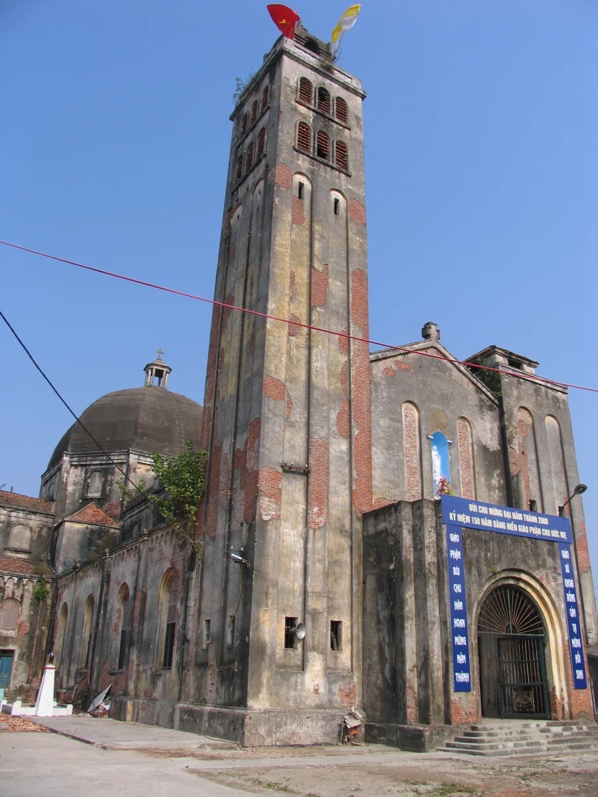
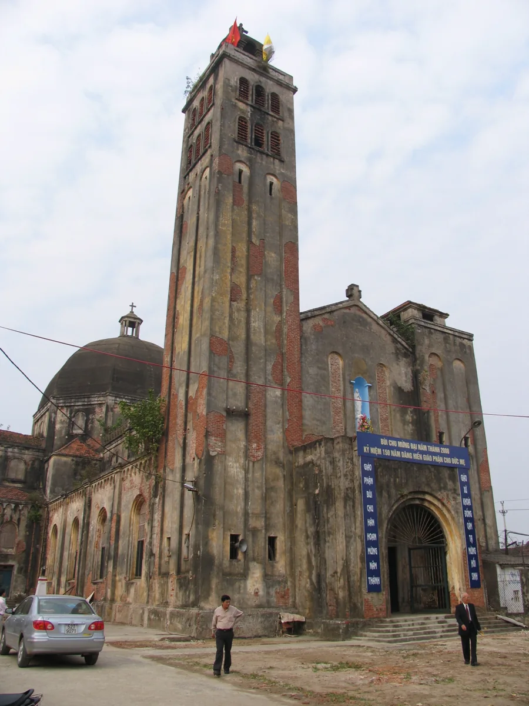
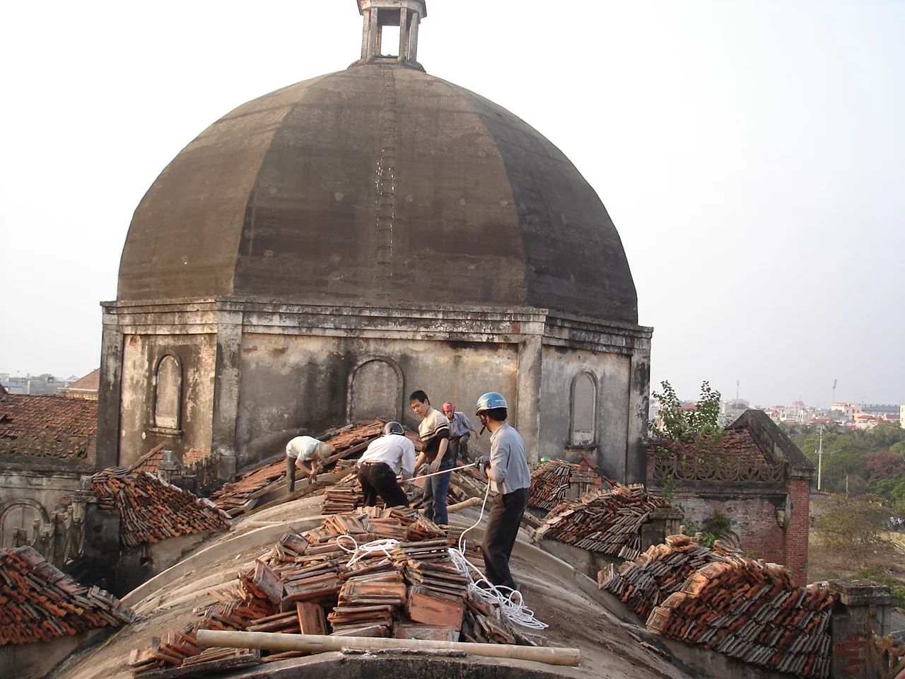
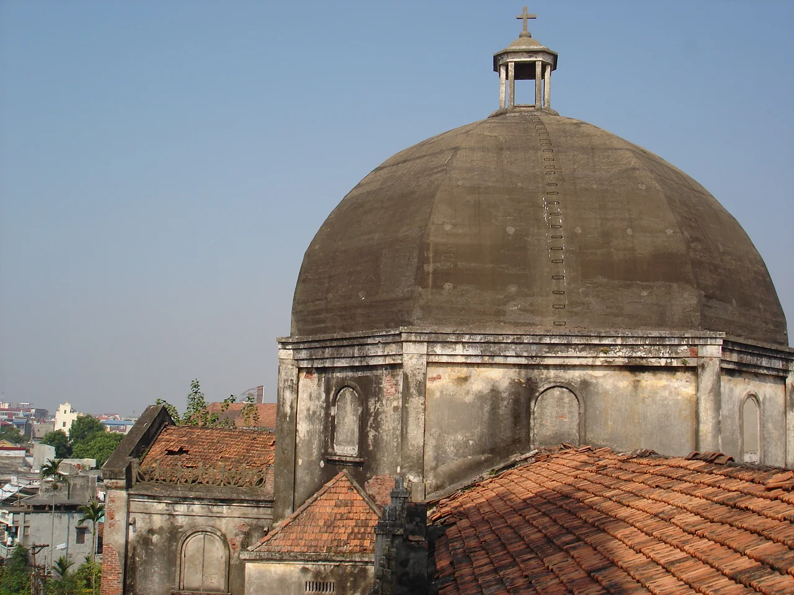
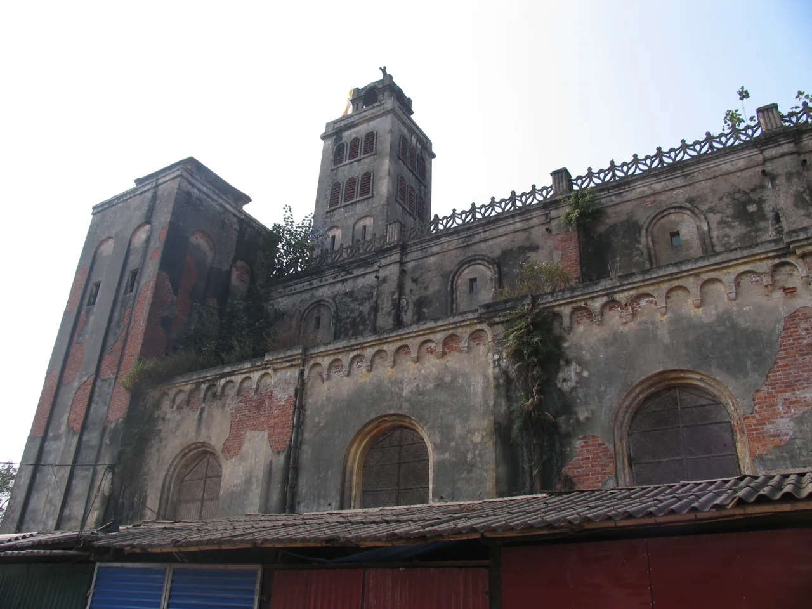
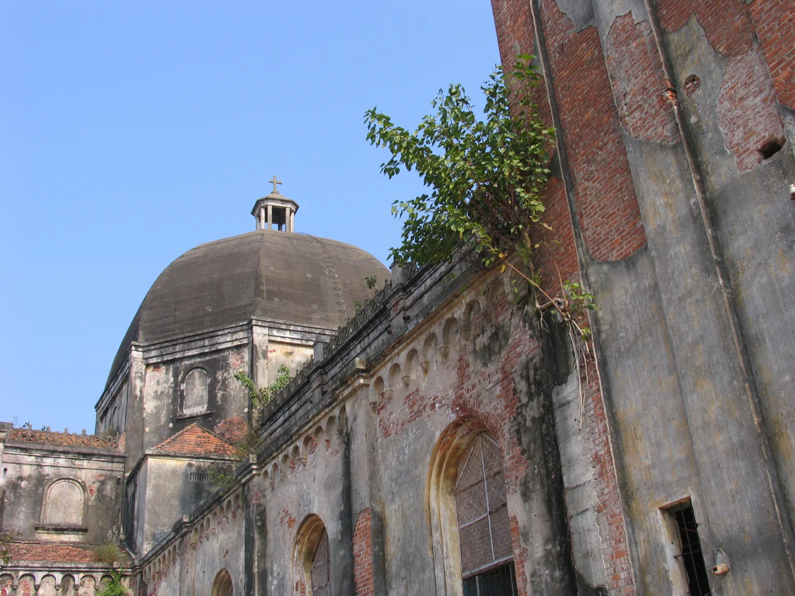

2026

2008Cặp ảnh 1
Mô tả 1
Giáo phận Bùi Chu
Giáo xứ Nữ Vương Các Thánh Tử Đạo

Theo tục truyền, Khoái Đồng (hay còn gọi là Khói Đồng) là một trong năm thôn cổ thuộc làng Vị Hoàng xưa. Hiện nay, Giáo xứ Khoái Đồng tọa lạc tại số 127 Lê Hồng Phong, phường Nam Định, tỉnh Ninh Bình, nằm ngay bên bờ hồ Vị Xuyên. Đây là giáo xứ duy nhất của Giáo phận Bùi Chu nằm ở vùng tả ngạn (phía tây) sông Đào (sông Nam Định), bởi toàn bộ khu vực tả ngạn sông Đào thuộc địa giới tỉnh Nam Định cũ vốn thuộc về Tổng Giáo phận Hà Nội.
Căn cứ theo quy hoạch bàn giao cho Giáo xứ ngày 07.11.2008, khuôn viên Nhà thờ có tổng diện tích 4.767,28 m² (hiện tại Giáo xứ mới nhận bàn giao hơn 4.000 m² do một số hộ dân vẫn chưa hoàn tất giải tỏa). Nhà thờ có hình thánh giá với chiều dài 65m, chiều rộng 16m, hai tay thánh giá mỗi bên mở rộng thêm 4m. Mái vòm tròn có đường kính 16m, cao 35m, cùng ngọn tháp cao 37m lưu giữ bộ chuông nhạc gồm 4 quả.

Hạt giống Tin Mừng bắt đầu nảy mầm nơi Khoái Đồng khi các thừa sai Dòng Tên đến loan báo đức tin. Nhờ sự nâng đỡ của các ngài, bà con giáo hữu đã đồng lòng góp công, góp của dựng nhà thờ. Khoảng năm 1700, Giáo họ Khoái Đồng chính thức được thành lập dưới sự coi sóc mục vụ của các linh mục Dòng Tên. Đến năm 1759, giáo họ được chuyển giao lại cho các linh mục Dòng Đa Minh đảm nhiệm.
Sau thời cấm đạo, cộng đoàn đức tin ngày một thêm đông đảo. Nhằm đáp ứng nhu cầu mục vụ, năm 1875, Đức cha Barnabé Cézon Khang đã quyết định nâng Giáo họ Khoái Đồng lên hàng giáo xứ. Đến năm 1900, chiếu theo nghị quyết của Công đồng Kẻ Sặt, Giáo xứ Khoái Đồng được chọn làm trung tâm đào tạo nhân sự cho Giáo phận Đông Đàng Ngoài (Giáo phận Dòng), với toàn bộ công tác xây dựng và đào tạo được trao phó cho các linh mục Dòng Đa Minh.
Từ thập niên 1920, quần thể kiến trúc tôn giáo tại Khoái Đồng bắt đầu được các tu sĩ Dòng Đa Minh Tây Ban Nha quy hoạch và xây cất trên tổng diện tích rộng 56.085 m². Quần thể bao gồm: Nhà thờ Khoái Đồng, Giáo hoàng Chủng viện Thánh Albertô Cả (nay là Trường Tiểu học Phạm Hồng Thái, phân hiệu 4), Trường Sư phạm Thánh Tôma (nay là Trường THPT Nguyễn Khuyến), cùng các công trình phụ trợ lân cận.
Riêng ngôi Thánh đường Khoái Đồng được Cha Casado Thuận, O.P. chủ trì thiết kế và thi công theo phong cách kiến trúc Romanesque (La Mã). Công trình chính thức khởi công từ năm 1934; đến năm 1936, Đức cha Muñagorri Trung đã chủ sự nghi thức làm phép và đặt viên đá đầu tiên cho ngôi thánh đường.
Năm 1941, Nhà thờ Khoái Đồng long trọng khánh thành dưới tước hiệu Đức Mẹ Nữ Vương Các Thánh Tử Đạo. Dịp Đại lễ Giáng sinh cùng năm, Thánh lễ Misa đầu tiên đã được cử hành trọng thể tại đây. Thánh đường mang tước hiệu Nữ Vương Các Thánh Tử Đạo nhằm khắc ghi dấu ấn lịch sử trên mảnh đất ven bờ sông Vị Hoàng, nơi hàng vạn chứng nhân đức tin đã can trường hiến dâng mạng sống vì Thiên Chúa và vì Giáo hội Việt Nam.
Biến cố năm 1954 khiến đất nước tạm thời bị chia cắt. Các thừa sai Đa Minh Tây Ban Nha bị trục xuất, phần lớn giáo dân Khoái Đồng cùng các linh mục Đa Minh Việt Nam rời quê hương di cư vào miền Nam. Trong giai đoạn 1956 - 1959, Giáo xứ không có linh mục sở tại coi sóc. Dẫu vậy, đáp lại thỉnh cầu từ Tòa Giám mục Bùi Chu, Cha Antôn Đinh Lưu Nhân từ Giáo xứ Nam Định (thuộc Tổng Giáo phận Hà Nội) đã thường xuyên sang giúp mục vụ cho cộng đoàn.
Năm 1959, Ủy ban Mặt trận Tổ quốc Nam Định sắp xếp Linh mục Đa Minh Lâm Quang Học từ xứ Giáo Lạc (huyện Nghĩa Hưng) về cư trú tại đây. Kể từ khi Cha Học qua đời vào năm 1963, cơ sở nhà thờ dần bị sử dụng vào các mục đích sản xuất, vui chơi giải trí ngoài tôn giáo; đồng thời, nhiều hộ dân bắt đầu "nhảy dù", tạm cư và dựng nhà ở ngay trong khuôn viên thánh đường.

Năm 1992 - 1994: Trước hiện trạng công trình xuống cấp hư hỏng nặng, Cha cố Vinh Sơn Bùi Công Tam cùng Ban hành giáo mới thành lập gồm 7 người, dưới sự ủy nhiệm của Tòa Giám mục Bùi Chu, bắt đầu nhiều lần gửi đơn xin bàn giao lại nhà thờ Khoái Đồng.
Năm 1998: Đức cố Giám mục Giuse Maria Vũ Duy Nhất gửi đơn đề nghị UBND tỉnh Nam Định và các ban ngành giải quyết bàn giao lại nhà thờ.
Năm 2002: Đức Giám mục Giuse Hoàng Văn Tiệm tiếp tục gửi đơn kiến nghị các cấp chính quyền xin lại nhà thờ nhằm sửa chữa, lập lại nơi cử hành phụng vụ cho cộng đoàn Giáo xứ.
Năm 2008: Ngày 09.05.2008, Văn phòng Chính phủ ban hành Công văn 465/VPCP-NC truyền đạt chỉ đạo của Thủ tướng Chính phủ về việc đồng ý giao Nhà thờ Khoái Đồng cho Tòa Giám mục Bùi Chu để sử dụng vào mục đích tôn giáo. Đến ngày 05.09.2008, UBND thành phố Nam Định có văn bản thông báo chính thức gửi Tòa Giám mục Bùi Chu về việc giao trả nhà thờ Khoái Đồng.
Tiến trình bàn giao được chia làm ba giai đoạn và hiện vẫn chưa hoàn tất. Sau khi giải phóng một phần diện tích đất bị lấn chiếm, chính quyền đã tiến hành bàn giao đợt I vào ngày 07.11.2008 và đợt II vào tháng 6 năm 2010. Do phần lớn diện tích giải tỏa trong cả hai đợt được quy hoạch vào công trình giao thông và công viên đô thị, quỹ đất thực tế bàn giao lại cho Giáo xứ Khoái Đồng đã giảm đi đáng kể. Đợt bàn giao thứ III hiện vẫn đang tiếp diễn, vì một số hộ dân còn cư trú trong khuôn viên đang chờ phương án di dời.

Trải qua 6 năm nỗ lực tái thiết và phục chế, vào ngày 27.12.2014, Thánh lễ tạ ơn khánh thành và cung hiến Thánh đường Khoái Đồng đã diễn ra trang trọng, mở ra trang sử mới cho giáo xứ.
Đang theo học
Giáo lý Hồng Ân
Theo học Giáo lý Dự tòng - Hôn nhân
Vuốt ngang hoặc dùng phím mũi tên để xem các tu sĩ

Chính xứ, từ 2024

Phó xứ

Đặc Trách Huynh đoàn Đa Minh Giáo phận


LƯU Ý: CHƯA CÓ ẢNH 2026, CÁC CẶP ẢNH DƯỚI ĐÂY LÀ THỬ NGHIỆM

2008Mô tả 1

2026
2008Mô tả 2

2026
2008Mô tả 3

2026
2008Mô tả 4